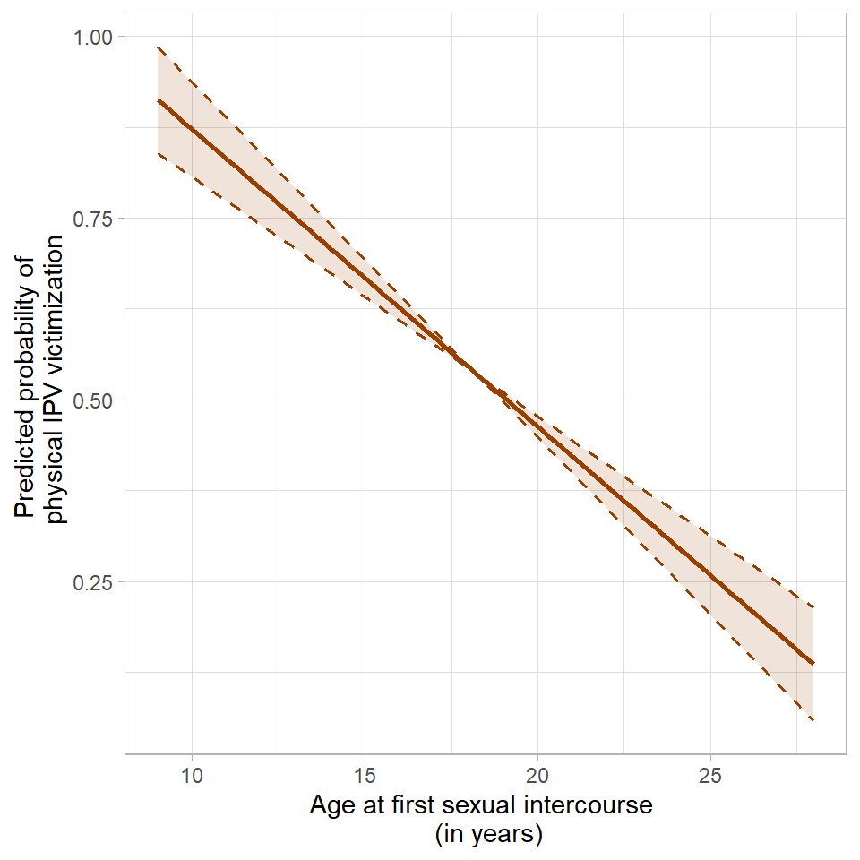
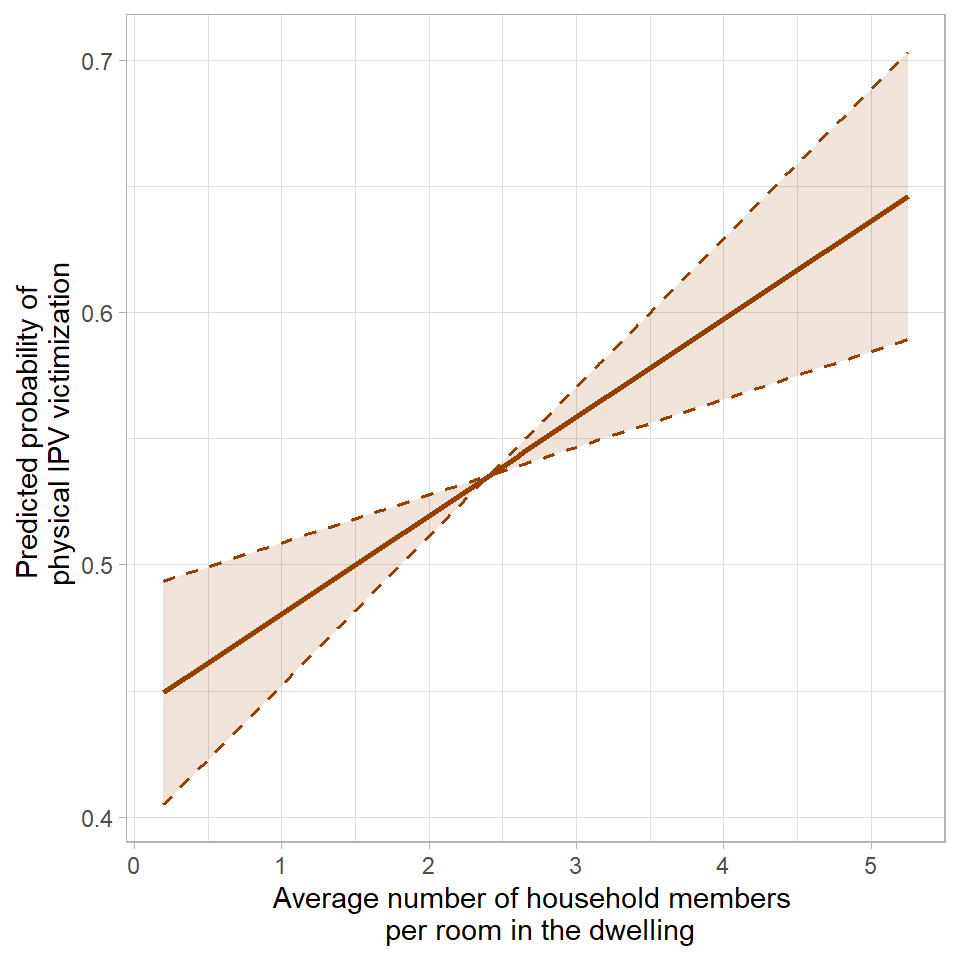
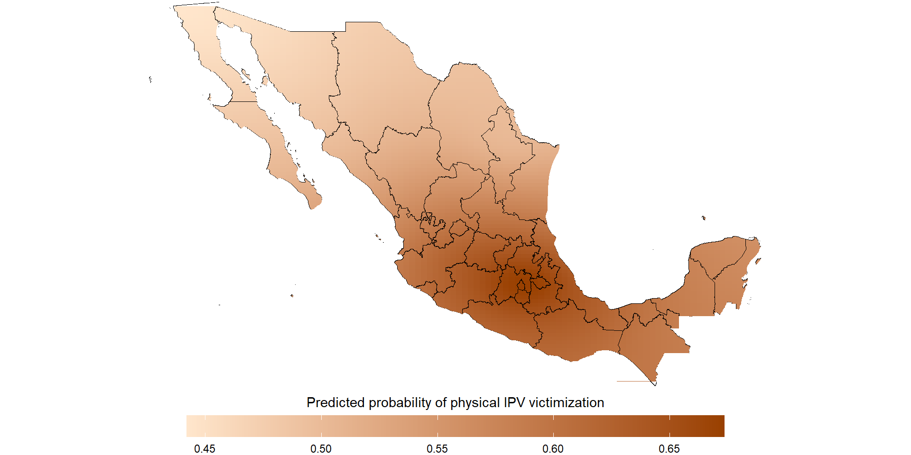

A computational approach to risk factors for intimate partner violence against women and girls in Mexico
A job talk prepared for the
Tecnológico de Monterrey
Juan Armando Torres Munguía, Ph.D.
August 28, 2026
RESEARCH AGENDA
The goal of my academic work is to provide scientific evidence to better understand how individuals, families, and communities experience, adapt to, and cope with humanitarian- and development-related phenomena. To address this question, I integrate statistical methods, machine learning algorithms, and data science techniques.
RESEARCH AGENDA
The goal of my academic work is to provide scientific evidence to better understand how individuals, families, and communities experience, adapt to, and cope with humanitarian- and development-related phenomena. To address this question, I integrate statistical methods, machine learning algorithms, and data science techniques.
Specific lines of research:
- Risk factors for crime and gender-based violence victimization.
- Individual-, community-, and regional-level correlates of poverty (income, food insecurity, energy poverty, etc.).
- Insights and forecasts for humanitarian emergencies (armed conflict, disease outbreaks, forced displacement, etc.).
RESEARCH AGENDA
The goal of my academic work is to provide scientific evidence to better understand how individuals, families, and communities experience, adapt to, and cope with humanitarian- and development-related phenomena. To address this question, I integrate statistical methods, machine learning algorithms, and data science techniques.
Specific lines of research:
- Risk factors for crime and gender-based violence victimization.
- Individual-, community-, and regional-level correlates of poverty (income, food insecurity, energy poverty, etc.).
- Insights and forecasts for humanitarian emergencies (armed conflict, disease outbreaks, forced displacement, etc.).
Risk factors for crime and gender-based violence victimization.
MOTIVATION:
According to the 2021 National Survey on the Dynamics of Household Relationships (ENDIREH), in Mexico:
70.1% of women aged 15 and over have experienced at least one form of violence and/or discrimination.
39.9% have experienced intimate partner violence (IPV).
Among IPV victims, 78.3% neither sought support nor filed a complaint or report.
Beyond physical and sexual health consequences, IPV also has psychological consequences: 9.6% have considered or attempted suicide following victimization.
Risk factors for crime and gender-based violence victimization.
OBJECTIVE:
To identify and describe the extent to which a set of risk factors from the ecological model are associated with and can predict the probability of experiencing physical IPV against women and girls in Mexico.
The ecological model is a theoretical framework that conceptualizes violence as the result of the of the interaction of multiple factors at four interrelated levels: individual, relationship, community, and society.
Risk factors for crime and gender-based violence victimization.
DATA:
Dataset of 35,000 observations and 42 theoretical correlates from 10 data sources was created, covering the four levels of the ecological model:
Caracteristics of the woman: age, income, education, age at her first sexual intercourse, etc.
Caracteristics of the woman’s partner: age, income, education, etc.
Source: ENDIREH
Age of the woman at marriage or at cohabitation.
Woman’s level of autonomy in the context of the relationship.
Average number of household members per room in the dwelling.
Division of housework among household members.
Source: ENDIREH
Level of social marginalization.
Type of community (rural, urban).
Share of women-headed households.
Homicides against women.
Migration.
Source: ENIGH, Census, Homicide records, UNDP
Quality of government.
Quality of public services.
Perception of corruption.
Source: ENCIG, ENVIPE
Risk factors for crime and gender-based violence victimization.
DATA:
The ecological model creates a three-dimensional hierarchical structure, linking individual- and relationship-level data to municipal- and state-level information.
Risk factors for crime and gender-based violence victimization.
DATA:
The ecological model creates a three-dimensional hierarchical structure, linking individual- and relationship-level data to municipal- and state-level information.
MODEL
Binomial response variable, indicating whether a woman experienced physical violence within an intimate relationship in the past 12 months.
Predictors include the variables mentioned above, considering linear and nonlinear effects, spatial effects, interaction effects, and random effects. All these components are specified within a structured additive regression (STAR) model.
MODEL
STAR models provide a model-based framework in which different functional forms (e.g., linear and nonlinear effects) can compete to determine which best describes the relationship between covariates and the response variable.
This framework allows us to consider multiple potential effects simultaneously and better capture the complexity of the phenomenon under study.
MODEL
Due to its high dimensionality and complex structure the model cannot be estimated via traditional inference models.
I designed a three-step strategy is used to estimate the STAR model:
It combines estimation with simultaneous variable selection and model choice by iteratively selecting the best-fitting effect at each step.
To avoid overfitting, cross-validation is used to determine the optimal number of iterations, mitigating multicollinerity.
The boosting algorithm yields the best predictive model, retaining only relevant predictors in their most appropriate functional form.
To avoid selecting non-relevant variables, subsampling generates multiple random subsets, and the boosting algorithm controls the error rate while selecting predictors.
The relative selection frequency for each effect is computed across subsets; effects exceeding a predefined threshold are retained as stable.
The result is a parsimonious model including only stable factors.
- Finally, 95% confidence intervals for the subset of effects selected as stable are calculated by drawing 1000 random samples from the empirical distribution of the data using a bootstrap approach based on pointwise quantiles.
MAIN FINDINGS
Physical IPV victimization risk and women’s age at first sexual intercourse.
Women who initiate sex during childhood are a particularly vulnerable population to physical IPV in Mexico.
MAIN FINDINGS
Physical IPV victimization risk and average number of household members per room in the dwelling.
As the number of household members grows, the likelihood of suffering from physical violence in the context of intimate relationships increases at a rate of 1.6 percentage points per member per room in the dwelling.

MAIN FINDINGS
Spatial effects of physical IPV victimization risk.

POLICY IMPLICATIONS
Targeted interventions: identify the subgroups of women at greatest risk of IPV and prioritize targeted prevention and support strategies for these groups.
Prevention measures: identify interventions that could reduce women’s vulnerability to IPV, for example, measures aimed at preventing sexual initiation during childhood.
Women’s empowerment: identify strategies to promote the economic and social empowerment of women facing greater vulnerability to IPV.
Geographic targeting: identify priority areas for prevention, support, and resource allocation.
IMPACT
Torres Munguía, JA (2024) A model-based boosting approach to risk factors for physical intimate partner violence against women and girls in Mexico. Journal of Computational Social Science. DOI: 10.1007/s42001-024-00292-5.
Torres Munguía, JA (2024) An analysis of the risk factors for intimate partner sexual violence against women and girls in Mexico. Journal of Gender-Based Violence. DOI: 10.1332/23986808Y2024D000000031.
Torres Munguía, JA; Martínez-Zarzoso, I (2022) Determinants of Emotional Intimate Partner Violence against Women and Girls with Children in Mexican Households: An Ecological Framework. Journal of Interpersonal Violence. DOI: 10.1177/08862605211072179.
Kleffmann, J; Torres Munguía, JA; et al (2023) Factors Driving Weapons Holding in the North East of Nigeria. United Nations Institute for Disarmament Research Findings Report. DOI: 10.37559/MEAC/23/11.
Torres Munguía, JA; Martínez-Zarzoso, I (2018) What is behind homicide gender gaps in Mexico? A spatial semiparametric approach. Diskussionsbeiträge des Ibero-America Institute for Economic Research (IAI) - Georg-August-Universität Göttingen. Retrieved from: https://www.econstor.eu/handle/10419/178674.
Vilalta Perdomo, CJ; Castillo, JG; Torres Munguía, JA (2016) Violent Crime in Latin American Cities. Inter-American Development Bank Discussion Paper. DOI: 10.18235/0007973.
Together, these publications have accumulated more than 125 citations.
IMPACT
This research line has also inspired two research theses, for which I served as external supervisor:
Índice de violencia de pareja contra la mujer mexicana: análisis estadístico multivariado como herramienta para el etiquetado y clasificación de datos. Paulina Aldape Bretado, MSc in Data Science, Universidad Autónoma de Nuevo León.
Psychological Intimate Partner Violence Against Women and the Role of Childhood Violence Exposure: A Machine Learning Approach. Clara Strasser, MSc in Statistics, Ludwig-Maximilians-Universität München.
FUTURE WORK
Causal inference to assess, for example, the effect of child marriage on the probability of experiencing IPV.
Predictive models to estimate whether, how, where, and when different forms of violence may occur in the future, e.g., sexual violence using ACLED microdata.
Cross-country extensions to identify risk factors for gender-based violence in other countries with comparable survey data, e.g. Mongolia, Bangladesh, South Africa, and Uruguay.